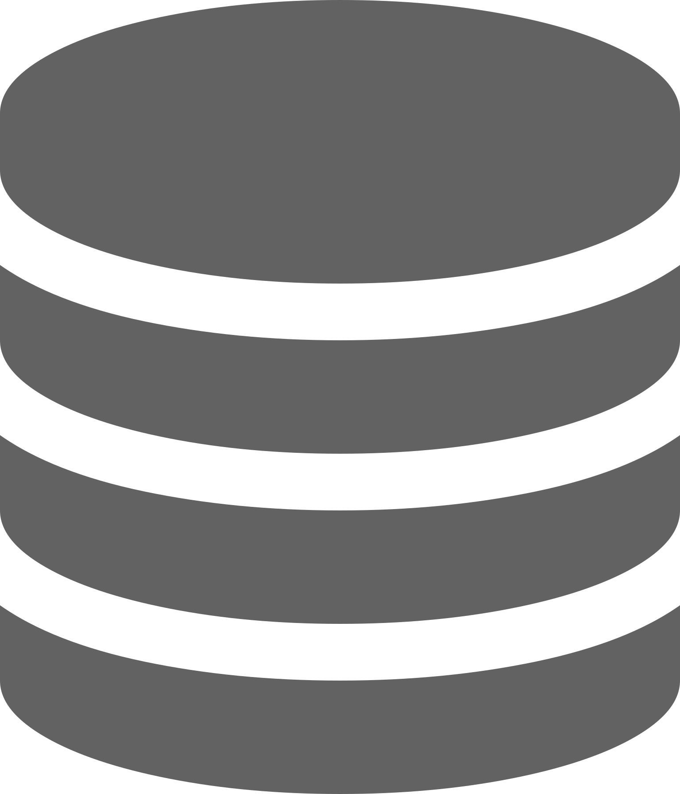

A php framework with zero configuration
Welcome to Ness PHP Framework. Do you need a web framework with minimized training effort? Ness PHP offers you a model-view-controller based environment for coding faster, safer and stronger web applications with (nearly) zero configuration. Get rid of mess and focus the main logic of your project.
Installation Documentation
Features We in Ness PHP

No Configuration
Ness PHP aims to speed up your development process by bypassing the configurations. There is no need to waste time with setting up your project.
Components
There is lots of ready to use libraries in Ness PHP. Just include the necessary library and go. You can check out the libraries of Ness PHP from the user manual

Forgot using 3rd party tools for database migration. Ness PHP offers you a variable based database versioning and migration library which you can use in the entry point of your application so no need a special efford for runing specific commands each time.
Database
Forgot using 3rd party tools for database migration. Ness PHP offers you a variable based database versioning and migration library which you can use in the entry point of your application so no need a special efford for runing specific commands each time.
Try Ness PHP Framework
Download Ness PHP and start your next awesome project.
Download (v1.0.6) Get Using Composer
No Configuration
Do not waste time with configurations and focus to main logic of your projectRead More >
Autopulse
Autopulse is a database library which you can do nearly any job with. CRUD Manager Query Builders Database Migrations .Net Framework style connection management and lots of features you may like.Read More >
Forms, FormElements & FileUploads
Form class is used to create forms, you can create text fields, buttons etc with From Elements class. Do not create mess with HTML in your php file, Ness PHP's form class can manage everything you need including file uploads.Read More >
Resource & Content Management
Ness PHP Framework contains a resource class which is designed to help you to manage your static values. You can use Resource Management for managing static values like string and image paths and Content Manager class for including css, js and/or other type of contentsRead More >
Security
What Ness PHP Offers you as security;- Maintenance Mode
- Url Cleaner for Umwanted Parameters
- XSS Protection
- CSRF Protection
- Directory Listing Blocking
- Parametirezed Database Queries
Master Pages, View Inheritance & Widget Import
Ness PHP's master pages allows you to create layouts for your web pages in your application.It is designed to eliminate the need to write the same html code for each repetitive design every time.Once you design a template, you can easily relate it to all the pages and accelerate your coding experience to twice thatRead More >
Easy to Learn
Our main goal is to minimize the learning process of the framework. We have prepared a nice documentation with examples to minimize your learning process.Read More >
Continiously Improving
We are working hard to make it better and we often publish updates to the framework whic is easy to upgrade your exists projects.User Manual >
Object Mappers
Object Mappers are used to define a value globally. You can pass any type of variable between Controllers & Views, System & Application, Configuration & Project. In simple words you can pass variable from any layer of your project to another.Read More >
Special File Directories
This library contains functions which provides you access to special application directories like controller folder, view folder etc..Read More >
Localization
Ness PHP Framework has a helper library to help you creating multi-language applications. You can create easily and quickly applications with lots of language files and switch between languages by Session/Cookie/Region or by choice.Read More >
Try Ness PHP Framework
Download Ness PHP and start your next awesome project.
Download (v1.0.6) Get Using Composer
© Ness PHP Framework Ness | All Rights Reserved